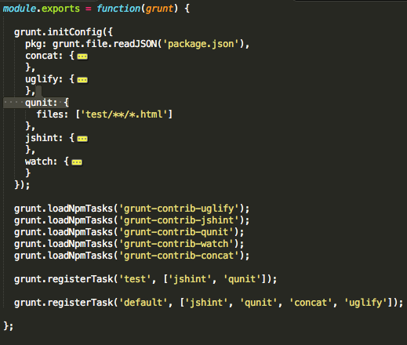
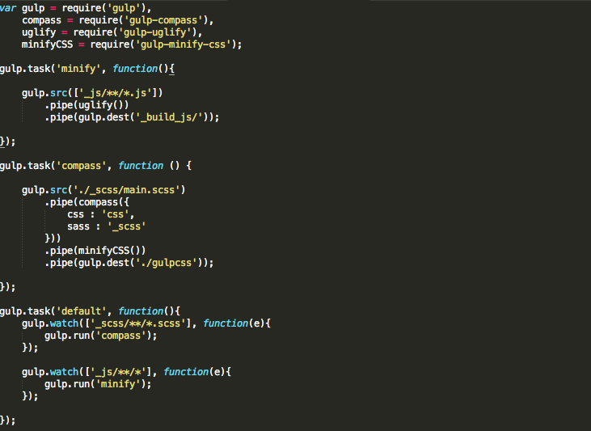
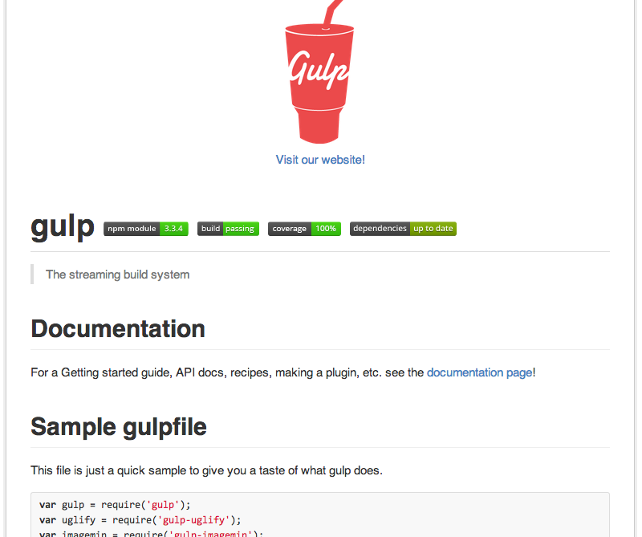
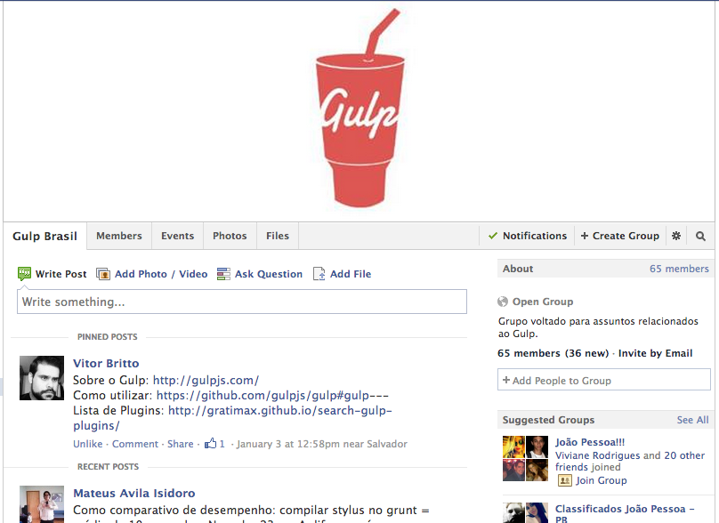
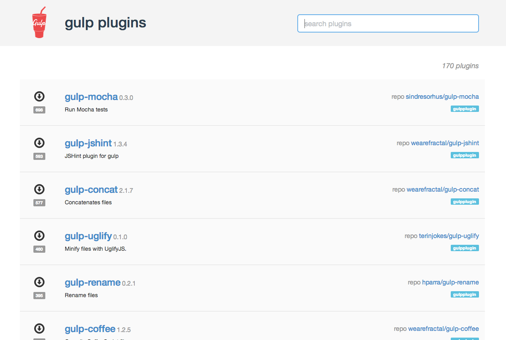
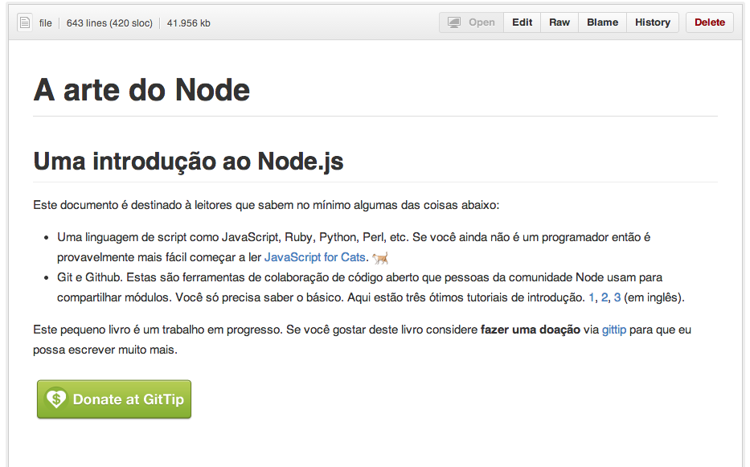

Migrando do Grunt para o Gulp
Manoel Quirino Neto
Meetup paraiba.js
Quem sou?
Front-end na Soda virtual.
GitHub /manoelneto
Twitter @manoel_n
Desenvolvedor do melhor site nacional de 2013 (http://domotiq.com.br/) pela ABRADi (Associação Brasileira das Agências Digitais)
Workflow
Todo bom desenvolvedor se preocupa no seu workflow
- Pré-processa o css
- Testa javascript
- Concatena javascript/css
- Minifica imagens
O problema
Para cada tarefa, era necessário executar um processo. Há casos em que eram utilizados programas desktops ao invés de utilizar a linha de comando, utilizando mais memória e processamento do computador.
Geralmente eram abertas várias abas do terminal para cada tarefa.
Solução

Grunt
- Automatizador de tarefas
- node.js
- Configuração (Gruntfile.js)
- Ben Alman (@cowboy)
- http://gruntjs.com
Grunt
Instalando o Grunt
$ npm install grunt --save-dev
Rodando o Grunt
$ grunt [task]

Depois do Grunt
1 processo para rodar o grunt e o grunt executa as tarefas
- pré-processar o css
- juntar o css
- minificar o css
- comprimir imagens
- testar o código
Agora, vamos falar de coisa boa.
Vamos falar de

Gulp
- Automatizador de tarefas
- node.js
- Convenção sobre configuração
- várias threads
- stream
- Fractal (@weareFractal)
- http://gulpjs.com/
- Não resolve nenhum problema.
Gulp
Instalando o Gulp
$ npm install gulp --save-dev
Rodando o Gulp
$ gulp [task]

Principais comandos
- .src(globs[, options]) recebe um "glob" e retorna um input stream
- .dest(path) recebe um "path" e retorna um output stream
- .task(name[, deps], fn) define uma task
- .run(tasks...[, cb]) executa tarefas
- .watch(globs[, options], cb) escuta o sistema de arquivos
Exemplo:
gulp.src('./client/templates/*.jade')
.pipe(jade())
.pipe(minify())
.pipe(gulp.dest('./build/minified_templates'));
Diferenças
Carregando as bibliotecas
Grunt:
grunt.loadNpmTasks('grunt-contrib-compass');
grunt.loadNpmTasks('grunt-contrib-uglify');
grunt.loadNpmTasks('grunt-contrib-cssmin');
Gulp:
var compass = require('gulp-compass'),
uglify = require('gulp-uglify'),
minifyCSS = require('gulp-minify-css');
Tarefa
Grunt:
concat: {
options: {
separator: ';'
},
dist: {
src: ['src/**/*.js'],
dest: 'dest/final.js'
}
},
Tarefa
Gulp:
gulp.task('compass', function () {
gulp.src('./_scss/main.scss')
.pipe(compass({
css : 'css',
sass : '_scss'
}))
.pipe(minifyCSS())
.pipe(gulp.dest('./css'));
});
Arquivo final Grunt
module.exports = function(grunt) {
grunt.initConfig({
pkg: grunt.file.readJSON('package.json'),
sass : {
dist : {
files : [{
expand : true,
src: ['./scss/**/*.{scss,sass}'],
dest: './css',
ext : '.css'
}]
}
}
});
grunt.loadNpmTasks('grunt-contrib-sass');
grunt.registerTask('default', ['sass']);
};
Arquivo final Gulp
var
gulp = require('gulp'),
sass = require('gulp-sass');
gulp.task('sass', function() {
gulp.src('./scss/**/*.{scss,sass}')
.pipe(sass())
.pipe(gulp.dest('./css/'))
});
gulp.task('default', function(){
gulp.run('sass');
});
Então, qual o melhor?
Grunt
- Documentação
- Comunidade
- Plugins
Gulp
- Mais rápido
- Mais legível
Github gulp (https://github.com/gulpjs/gulp#gulp)
Comunidade gulp Brasil no facebook (https://www.facebook.com/groups/gulpbrasil/)
Plugins do gulp (https://www.facebook.com/groups/gulpbrasil/gulp-plugins.png)
A arte do node (https://github.com/vitorbritto/art-of-node/blob/master/readme.pt-br.md)
Referências
- gulp (http://gulpjs.com/)
- grunt (http://gruntjs.com/)
- Github gulp (https://github.com/gulpjs/gulp#gulp)
- Comunidade gulp Brasil no facebook (https://www.facebook.com/groups/gulpbrasil/)
- Plugins do gulp http://gratimax.github.io/search-gulp-plugins/
- A arte do node (https://github.com/vitorbritto/art-of-node/blob/master/readme.pt-br.md)
- Gulp is the new black (http://www.shaundunne.com/gulp-is-the-new-black/)
E aí? Let`s code?